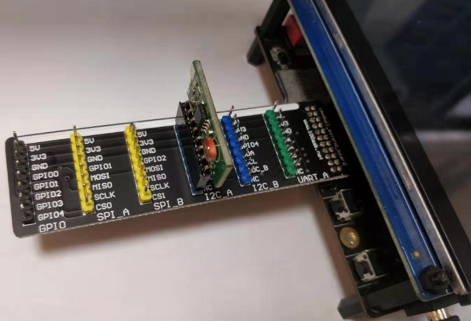
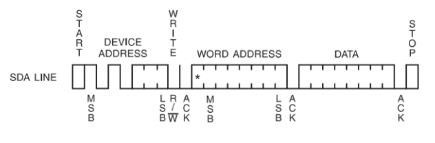

EEPROM Driver - "AT24C02"
HW setting
I2C Write data to AT24C02
I2C Read data to AT24C02
Random Read:

Sequential Read:

How to use
./my_eeprom_app <w/r> <char node> <address offset> [<count>] [<characters>]
ex:
write string "abcde" by offset 0 to EEPROM =>
./my_eeprom_app w /dev/my_eeprom 0x00 abcde
read five characters by offset 1 from EEPROM =>
./my_eeprom_app r /dev/my_eeprom 0x01 4
bcde